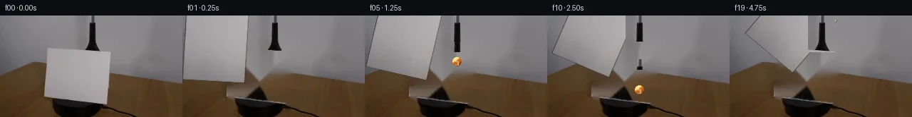
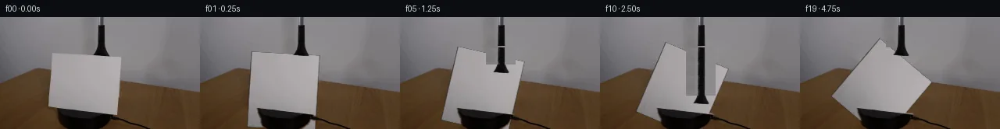
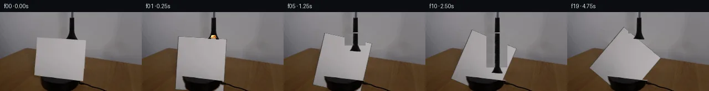
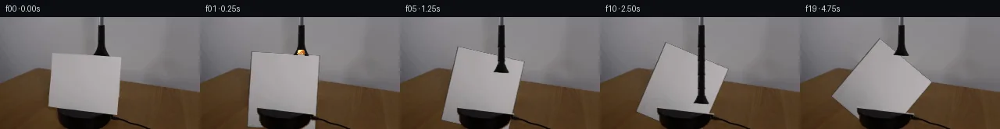
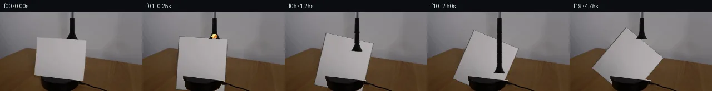
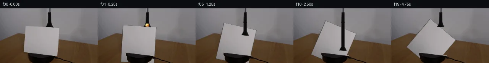
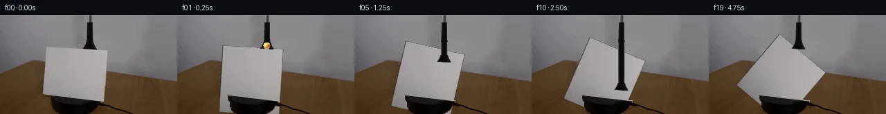
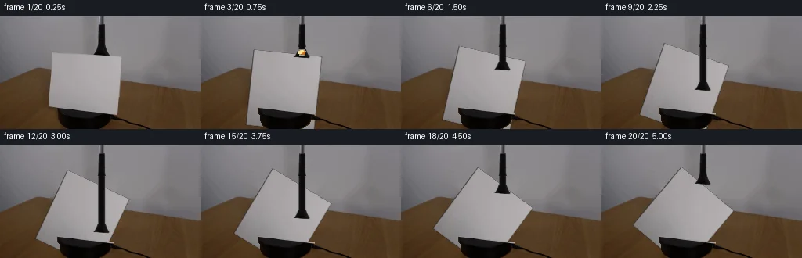
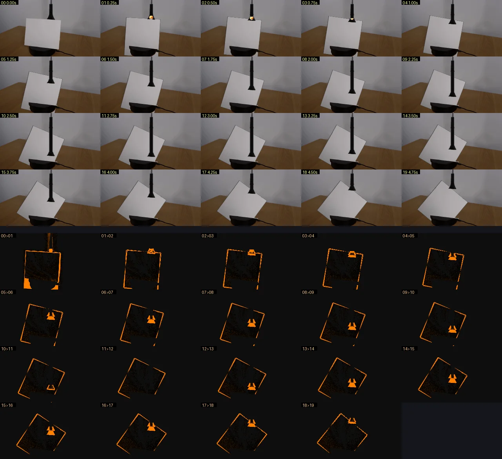

V0 · 初版
2026-11-04T21:47:20.970492+00:00 · RGB b5ed6b47d1cf
![]()
Observable Generation Trace
把最终像素视频、Harness 冻结的每轮候选、真实工具事件和 Agent 自述放在同一页。可观测证据与模型自述分开标记，避免把“模型说它检查过”误当成真实工具调用。
![首帧]()
Static locked-off single-shot with fixed frame throughout filmed with constant framerate in real-time. The scene shows a realistic scientific demonstration. The scene only contains the described setup and actions. The blue-black grabber tool held the tennis ball above the cardstock and lowered it behind the cardstock. The cardstock sits on the black platform on top of a wooden table. The blue-black grabber tool places the orange tennis ball behind the clockwise-rotating cardstock on the table.
首帧显示在左侧播放器初始画面。Track 权限、隔离和 tensor 一致性来自 run manifest，而不是 METHOD.md。
默认勾选初版和最终版；可选其他版本一起同步播放。仅检查图更新的连续重复快照已合并，回退旧视频仍保留为一次修订。
Observable events
来源：events.jsonl + run manifest
此 Track 禁止读取输出图片。逐轮预览由外部 Harness 自动冻结，只用于事后审计，生成 Agent 当时看不到这些页面。
Frozen candidates
每张图来自该 round 的真实 00 / 01 / 05 / 10 / 19 帧

pixels 6c2f3b74043b2910 · code aedce0b81333711d
--- previous/generate.py
+++ current/generate.py
@@ -0,0 +1,238 @@
+"""PixelWorld-Text case_0006 generation.
+
+Scene (measured from first_frame.png, see OBSERVATION.md):
+wooden table, black platform, light cardstock standing on the platform,
+blue-black grabber entering from the top. The grabber lowers an orange
+tennis ball behind the clockwise-rotating cardstock, releases it and
+retracts. 20 frames, 256x144, 4 fps. Frame 00 is the untouched first frame.
+
+Pure local pixel operations: inpainting, affine warp, analytic shading.
+"""
+import numpy as np
+from PIL import Image
+import cv2
+import artifact_io
+
+F0 = np.array(Image.open('first_frame.png').convert('RGB'))
+H, W = 144, 256
+im = F0.astype(np.float32)
+R, G, B = im[:, :, 0], im[:, :, 1], im[:, :, 2]
+V = im.mean(2)
+yy, xx = np.mgrid[0:H, 0:W].astype(np.float32)
+
+# ---------------------------------------------------------------- masks
+# Grabber geometry (shaft + claw head), frame-00 coordinates.
+axis_x = 130.0 - (yy / 42.0)
+shaft_geom = (yy <= 43) & (np.abs(xx - axis_x) <= 9.0)
+shaft_top = (yy <= 12) & (np.abs(xx - axis_x) <= 11.0)
+head = np.zeros((H, W), np.uint8)
+cv2.fillPoly(head, [np.array([[118, 39], [139, 39], [143, 44],
+ [137, 50], [120, 50], [115, 45]])], 1)
+grab_geom = shaft_geom | shaft_top | (head > 0)
+
+# Sheet visible-quad model in frame 00 (inset ~1px from measured edges).
+def L_of(y):
+ return np.interp(y, [47, 90, 110], [66.2, 63.6, 63.8])
+
+def R_of(y):
+ return np.interp(y, [47, 90, 125], [153.2, 151.4, 149.2])
+
+quad = np.array([[67, 47], [154, 51], [149, 125], [64, 110]], np.float32)
+sheet_vis = np.zeros((H, W), np.uint8)
+cv2.fillPoly(sheet_vis, [quad.astype(int)], 1)
+# Full sheet footprint (extends behind platform) used for background removal.
+sheet_full = np.zeros((H, W), np.uint8)
+cv2.fillPoly(sheet_full, [np.array([[65, 47], [154, 51], [151, 144], [63, 140]])], 1)
+
+obj_mask = ((grab_geom) | (sheet_full > 0)).astype(np.uint8)
+obj_mask = cv2.dilate(obj_mask, np.ones((3, 3), np.uint8))
+
+# --------------------------------------------------- background plate
+# Harmonic fill: iteratively blur object pixels from boundary colours,
+# then a short Telea pass for edge blending.
+bg = F0.copy()
+fill = cv2.GaussianBlur(bg, (0, 0), 30)
+bg[obj_mask > 0] = fill[obj_mask > 0]
+m = obj_mask.astype(bool)
+for _ in range(260):
+ blurred = cv2.blur(bg, (5, 5))
+ bg[m] = blurred[m]
+bg = cv2.inpaint(bg, obj_mask, 3, cv2.INPAINT_TELEA)
+
+# Matched grain on rebuilt zones.
+rng = np.random.default_rng(6)
+noise = rng.normal(0, 2.7, (H, W, 1)).astype(np.float32)
+noise = cv2.GaussianBlur(noise, (0, 0), 0.7)[..., None]
+wood_tone = (R - B > 12) & (V < 110)
+grain = np.repeat(noise, 3, 2)
+grain[wood_tone] *= 1.8
+soft = cv2.GaussianBlur(obj_mask.astype(np.float32), (0, 0), 1.2)[..., None]
+bgf = np.clip(bg.astype(np.float32) + grain * soft, 0, 255)
+
+# --------------------------------------------- platform foreground mask
+pmask = ((V < 68) & (np.abs(R - B) < 13)
+ & (xx > 72) & (xx < 162) & (yy > 108)).astype(np.uint8)
+n, labels, stats, _ = cv2.connectedComponentsWithStats(pmask, 8)
+if n > 1:
+ i = 1 + np.argmax(stats[1:, cv2.CC_STAT_AREA])
+ pmask = (labels == i).astype(np.uint8)
+pmask = cv2.dilate(pmask, np.ones((3, 3), np.uint8))
+palpha = cv2.GaussianBlur(pmask.astype(np.float32), (0, 0), 0.9)[..., None]
+
+# ------------------------------------------------------- cardstock sprite
+SW, SH = 88, 97
+sx = np.arange(SW, dtype=np.float32)
+sy = np.arange(SH, dtype=np.float32)
+SU, SV = np.meshgrid(sx, sy)
+# sheared source coordinates: top edge slopes down 4 px toward the right
… diff truncated; 151 more lines …
pixels e568381efb5700f0 · code f28df6c2e4c5ae14
--- previous/generate.py
+++ current/generate.py
@@ -111,6 +111,13 @@
salpha[:, 0] = 0.9
salpha[:, -1] = 0.9
PIVOT = (109.0, 90.0)
+X0, Y0 = 63, 47
+# Embed the sprite in a full-canvas buffer at its world position so the
+# rotation pivot is in image coordinates.
+sheet_rgb0 = np.zeros((H, W, 3), np.float32)
+sheet_a0 = np.zeros((H, W), np.float32)
+sheet_rgb0[Y0:Y0 + SH, X0:X0 + SW] = sprite
+sheet_a0[Y0:Y0 + SH, X0:X0 + SW] = salpha
# --------------------------------------------------------- grabber sprite
ref = bg.copy()
@@ -125,36 +132,35 @@
grab_rgb = F0[GY0:GY1, GX0:GX1].copy()
grab_a = galpha[GY0:GY1, GX0:GX1].copy()
-def paste_grabber(canvas, d):
- """d = downward px offset of the claw head from its frame-00 pose."""
+def paste_grabber(canvas, d, ball_held=False):
+ """Composite the descending/retracting grabber. Rows 0..36 always come
+ verbatim from frame 00 (static shaft/background crossing the top edge);
+ the head sprite is translated down by d px and alpha-composited.
+ When a ball is held, the ball (painted earlier) shows through the finger
+ gaps because the head pixels keep their soft alpha."""
d = int(round(d))
- if d == 0:
- # exact original pixels while at home pose (no ball here on retract)
- canvas[GY0:GY1, GX0:GX1] = F0[GY0:GY1, GX0:GX1]
- return
- # The shaft enters from above: rows above the translated head keep the
- # original shaft strip crossing the top edge.
- strip_h = min(d, H)
- canvas[0:strip_h, GX0:GX1] = F0[0:strip_h, GX0:GX1]
- # Translated head/shaft sprite over the rest.
- y0, y1 = d, min(d + (GY1 - GY0), H)
- h = y1 - y0
- a = grab_a[:h, :, None]
- canvas[y0:y1, GX0:GX1] = (
- a * grab_rgb[:h] + (1 - a) * canvas[y0:y1, GX0:GX1])
-
-def paste_grabber_with_ball(canvas, d):
- """Frame with ball present: shaft strip then alpha head (ball shows
- through the finger gaps), ball was composited earlier."""
- d = int(round(d))
- strip_h = max(d, 37)
- canvas[0:min(strip_h, 37), GX0:GX1] = F0[0:min(strip_h, 37), GX0:GX1]
- y0, y1 = max(d, 37), min(max(d, 37) + 15, H)
+ # Shaft: the tool is straight and uniform, so extend it by tiling the
+ # frame-00 shaft strip (rows 18..35) down to the translated head top.
+ canvas[0:37, GX0:GX1] = F0[0:37, GX0:GX1]
+ shaft_end = min(d + 39, H)
+ if d < 2:
+ canvas[37:min(39, shaft_end), GX0:GX1] = \
+ F0[37:min(39, shaft_end), GX0:GX1]
+ for y in range(39, shaft_end):
+ if d < 2:
+ canvas[y, GX0:GX1] = F0[y if y < 52 else 18 + ((y - 39) % 18),
+ GX0:GX1]
+ else:
+ src = 18 + ((y - 39) % 18)
+ canvas[y, GX0:GX1] = F0[src, GX0:GX1]
+ # translated claw head (sprite rows 39..51) with soft alpha
+ y0, y1 = max(d + 39, 0), min(d + 52, H)
sy0 = y0 - d
- a = grab_a[sy0:sy0 + (y1 - y0), :, None]
- canvas[y0:y1, GX0:GX1] = (
- a * grab_rgb[sy0:sy0 + (y1 - y0)]
- + (1 - a) * canvas[y0:y1, GX0:GX1])
+ if y1 > y0:
+ a = grab_a[sy0:sy0 + (y1 - y0), :, None]
+ canvas[y0:y1, GX0:GX1] = (
+ a * grab_rgb[sy0:sy0 + (y1 - y0)]
+ + (1 - a) * canvas[y0:y1, GX0:GX1])
# -------------------------------------------------------------- tennis ball
def make_ball(r=6.6):
@@ -220,16 +226,13 @@
paste_ball(canvas, 129, 43 + DROPS[k])
# rotating cardstock
M = cv2.getRotationMatrix2D(PIVOT, -angle_of(k), 1.0)
- wimg = cv2.warpAffine(sprite, M, (W, H), flags=cv2.INTER_LINEAR)
- wa = cv2.warpAffine(salpha, M, (W, H), flags=cv2.INTER_LINEAR)[..., None]
+ wimg = cv2.warpAffine(sheet_rgb0, M, (W, H), flags=cv2.INTER_LINEAR)
+ wa = cv2.warpAffine(sheet_a0, M, (W, H), flags=cv2.INTER_LINEAR)[..., None]
canvas = wa * wimg + (1 - wa) * canvas
# static black platform front occludes the sheet base
… diff truncated; 10 more lines …pixels e568381efb5700f0 · code e038fa5df404db84
--- previous/generate.py
+++ current/generate.py
@@ -132,12 +132,12 @@
grab_rgb = F0[GY0:GY1, GX0:GX1].copy()
grab_a = galpha[GY0:GY1, GX0:GX1].copy()
-def paste_grabber(canvas, d, ball_held=False):
- """Composite the descending/retracting grabber. Rows 0..36 always come
- verbatim from frame 00 (static shaft/background crossing the top edge);
- the head sprite is translated down by d px and alpha-composited.
- When a ball is held, the ball (painted earlier) shows through the finger
- gaps because the head pixels keep their soft alpha."""
+def paste_grabber(canvas, d, held=False):
+ """Composite the descending/retracting grabber. Rows 0..36 come verbatim
+ from frame 00 (static shaft crossing the top edge); the shaft is extended
+ by tiling its own frame-00 strip; the head sprite is translated by d.
+ When held=True a rounded window is carved between the fingers so the
+ ball (painted earlier) shows through."""
d = int(round(d))
# Shaft: the tool is straight and uniform, so extend it by tiling the
# frame-00 shaft strip (rows 18..35) down to the translated head top.
pixels 0ad1dcb8e36fbd08 · code a8dbda2b2a8f3628
--- previous/generate.py
+++ current/generate.py
@@ -157,7 +157,14 @@
y0, y1 = max(d + 39, 0), min(d + 52, H)
sy0 = y0 - d
if y1 > y0:
- a = grab_a[sy0:sy0 + (y1 - y0), :, None]
+ a = grab_a[sy0:sy0 + (y1 - y0)].copy()
+ if held:
+ gy, gx = np.mgrid[0:a.shape[0], 0:a.shape[1]]
+ wx = gx + GX0 - 129.0
+ wy = gy + sy0 + d - 46.0
+ window = ((wx / 5.0) ** 2 + (wy / 6.4) ** 2 <= 1) & (wy > -4.5)
+ a[window] = 0.0
+ a = a[..., None]
canvas[y0:y1, GX0:GX1] = (
a * grab_rgb[sy0:sy0 + (y1 - y0)]
+ (1 - a) * canvas[y0:y1, GX0:GX1])
@@ -223,7 +230,7 @@
canvas = bgf.copy()
# ball first: the rotating cardstock eclipses it
if k <= 12:
- paste_ball(canvas, 129, 43 + DROPS[k])
+ paste_ball(canvas, 129, 46 + DROPS[k])
# rotating cardstock
M = cv2.getRotationMatrix2D(PIVOT, -angle_of(k), 1.0)
wimg = cv2.warpAffine(sheet_rgb0, M, (W, H), flags=cv2.INTER_LINEAR)
@@ -231,8 +238,8 @@
canvas = wa * wimg + (1 - wa) * canvas
# static black platform front occludes the sheet base
canvas = palpha * F0.astype(np.float32) + (1 - palpha) * canvas
- # grabber (in front), holding the ball while descending / empty retract
- paste_grabber(canvas, DROPS[k])
+ # grabber (in front), holding the ball while descending; empty retract
+ paste_grabber(canvas, DROPS[k], held=(k <= 12))
frames.append(np.clip(canvas, 0, 255).astype(np.uint8))
frames = np.stack(frames)
pixels a08272852565747f · code bfba36d8c87f1fb9
--- previous/generate.py
+++ current/generate.py
@@ -70,14 +70,16 @@
bgf = np.clip(bg.astype(np.float32) + grain * soft, 0, 255)
# --------------------------------------------- platform foreground mask
-pmask = ((V < 68) & (np.abs(R - B) < 13)
- & (xx > 72) & (xx < 162) & (yy > 108)).astype(np.uint8)
+# Static near-black front face of the platform. It never moves, so it is
+# composited verbatim from frame 00 in front of the rotating sheet.
+pmask = ((V < 120) & (np.abs(R - B) < 16)
+ & (xx > 70) & (xx < 166) & (yy > 112)).astype(np.uint8)
n, labels, stats, _ = cv2.connectedComponentsWithStats(pmask, 8)
if n > 1:
i = 1 + np.argmax(stats[1:, cv2.CC_STAT_AREA])
pmask = (labels == i).astype(np.uint8)
pmask = cv2.dilate(pmask, np.ones((3, 3), np.uint8))
-palpha = cv2.GaussianBlur(pmask.astype(np.float32), (0, 0), 0.9)[..., None]
+palpha = cv2.GaussianBlur(pmask.astype(np.float32), (0, 0), 0.6)[..., None]
# ------------------------------------------------------- cardstock sprite
SW, SH = 88, 97
@@ -128,32 +130,33 @@
galpha[grab_geom] = np.maximum(dark_a, blue_a * 0.9)[grab_geom]
galpha = cv2.GaussianBlur(galpha, (0, 0), 0.55)
galpha = np.clip(galpha, 0, 1)
-GX0, GX1, GY0, GY1 = 110, 148, 0, 52
+GY0, GY1 = 0, 52
+GX0, GX1 = 110, 148
grab_rgb = F0[GY0:GY1, GX0:GX1].copy()
grab_a = galpha[GY0:GY1, GX0:GX1].copy()
+# Shaft strip used to extend the tool as the head is lowered.
+SHAFT0, SHAFT1 = 20, 38
+shaft_rgb = F0[SHAFT0:SHAFT1, GX0:GX1].copy()
+shaft_a = galpha[SHAFT0:SHAFT1, GX0:GX1].copy()
+
+def _over(dst, src, a):
+ return a * src + (1 - a) * dst
def paste_grabber(canvas, d, held=False):
- """Composite the descending/retracting grabber. Rows 0..36 come verbatim
- from frame 00 (static shaft crossing the top edge); the shaft is extended
- by tiling its own frame-00 strip; the head sprite is translated by d.
- When held=True a rounded window is carved between the fingers so the
- ball (painted earlier) shows through."""
+ """Alpha-composite the grabber. The claw head (sprite rows 39..51) is
+ translated down by d px; the shaft is extended by tiling its own
+ frame-00 strip. held=True carves a rounded window between the fingers
+ so the ball (painted earlier) shows through."""
d = int(round(d))
- # Shaft: the tool is straight and uniform, so extend it by tiling the
- # frame-00 shaft strip (rows 18..35) down to the translated head top.
- canvas[0:37, GX0:GX1] = F0[0:37, GX0:GX1]
- shaft_end = min(d + 39, H)
- if d < 2:
- canvas[37:min(39, shaft_end), GX0:GX1] = \
- F0[37:min(39, shaft_end), GX0:GX1]
- for y in range(39, shaft_end):
- if d < 2:
- canvas[y, GX0:GX1] = F0[y if y < 52 else 18 + ((y - 39) % 18),
- GX0:GX1]
- else:
- src = 18 + ((y - 39) % 18)
- canvas[y, GX0:GX1] = F0[src, GX0:GX1]
- # translated claw head (sprite rows 39..51) with soft alpha
+ # static upper shaft, straight from frame 00 with its soft alpha
+ canvas[0:39, GX0:GX1] = _over(
+ canvas[0:39, GX0:GX1], F0[0:39, GX0:GX1], galpha[0:39, GX0:GX1, None])
+ # extended shaft (rows 39 .. d+38)
+ for y in range(39, d + 39):
+ s = (y - 39) % (SHAFT1 - SHAFT0)
+ canvas[y, GX0:GX1] = _over(
+ canvas[y, GX0:GX1], shaft_rgb[s], shaft_a[s, :, None])
+ # translated claw head
y0, y1 = max(d + 39, 0), min(d + 52, H)
sy0 = y0 - d
if y1 > y0:
@@ -164,10 +167,9 @@
wy = gy + sy0 + d - 46.0
window = ((wx / 5.0) ** 2 + (wy / 6.4) ** 2 <= 1) & (wy > -4.5)
a[window] = 0.0
- a = a[..., None]
- canvas[y0:y1, GX0:GX1] = (
- a * grab_rgb[sy0:sy0 + (y1 - y0)]
- + (1 - a) * canvas[y0:y1, GX0:GX1])
+ canvas[y0:y1, GX0:GX1] = _over(
+ canvas[y0:y1, GX0:GX1],
+ grab_rgb[sy0:sy0 + (y1 - y0)], a[..., None])
# -------------------------------------------------------------- tennis ball
… diff truncated; 1 more lines …pixels a08272852565747f · code bfba36d8c87f1fb9
No generate.py text change in this frozen round.

pixels 33682977d0e07d09 · code 3623dfa0440afd96
--- previous/generate.py
+++ current/generate.py
@@ -79,7 +79,9 @@
i = 1 + np.argmax(stats[1:, cv2.CC_STAT_AREA])
pmask = (labels == i).astype(np.uint8)
pmask = cv2.dilate(pmask, np.ones((3, 3), np.uint8))
-palpha = cv2.GaussianBlur(pmask.astype(np.float32), (0, 0), 0.6)[..., None]
+# hard interior, single-pixel feathered rim
+_pa = cv2.GaussianBlur(pmask.astype(np.float32), (0, 0), 0.6)
+palpha = np.clip((_pa - 0.35) / 0.3, 0, 1)[..., None]
# ------------------------------------------------------- cardstock sprite
SW, SH = 88, 97
@@ -164,7 +166,7 @@
if held:
gy, gx = np.mgrid[0:a.shape[0], 0:a.shape[1]]
wx = gx + GX0 - 129.0
- wy = gy + sy0 + d - 46.0
+ wy = gy + sy0 + d - 44.0
window = ((wx / 5.0) ** 2 + (wy / 6.4) ** 2 <= 1) & (wy > -4.5)
a[window] = 0.0
canvas[y0:y1, GX0:GX1] = _over(
@@ -246,5 +248,32 @@
frames = np.stack(frames)
artifact_io.save(frames, '.')
+
+# transition check: all 20 frames (4x5) then amplified adjacent-frame
+# absolute differences for frames 01..19 (4x5).
+from PIL import ImageDraw
+TW, TH = W, H
+GAP = 18
+sheet = Image.new('RGB', (5 * TW, 8 * TH + GAP), (20, 22, 28))
+dr = ImageDraw.Draw(sheet)
+for i in range(20):
+ x = (i % 5) * TW
+ y = (i // 5) * TH
+ sheet.paste(Image.fromarray(frames[i]), (x, y))
+ dr.rectangle([x, y, x + 46, y + 11], fill=(0, 0, 0))
+ dr.text((x + 3, y + 1), f'{i:02d} {i/4:.2f}s', fill=(255, 255, 120))
+for i in range(1, 20):
+ d = np.abs(frames[i].astype(int) - frames[i - 1].astype(int)).sum(2)
+ heat = np.clip(d * 3, 0, 255).astype(np.uint8)
+ hot = np.dstack([heat, (heat * 0.5).astype(np.uint8),
+ np.zeros_like(heat)])
+ hot[d == 0] = 14
+ x = ((i - 1) % 5) * TW
+ y = 4 * TH + GAP + ((i - 1) // 5) * TH
+ sheet.paste(Image.fromarray(hot), (x, y))
+ dr.rectangle([x, y, x + 40, y + 11], fill=(0, 0, 0))
+ dr.text((x + 3, y + 1), f'{i-1:02d}>{i:02d}', fill=(255, 200, 120))
+sheet.save('transition_check.png')
+print('saved transition_check.png')
print('angles:', [round(angle_of(k), 1) for k in range(20)])
print('drops :', DROPS)
pixels b9c711ecb497caa7 · code c202f446a88db945
--- previous/generate.py
+++ current/generate.py
@@ -136,28 +136,29 @@
GX0, GX1 = 110, 148
grab_rgb = F0[GY0:GY1, GX0:GX1].copy()
grab_a = galpha[GY0:GY1, GX0:GX1].copy()
-# Shaft strip used to extend the tool as the head is lowered.
SHAFT0, SHAFT1 = 20, 38
-shaft_rgb = F0[SHAFT0:SHAFT1, GX0:GX1].copy()
-shaft_a = galpha[SHAFT0:SHAFT1, GX0:GX1].copy()
+shaft_row = F0[SHAFT0:SHAFT1, GX0:GX1].mean(0)
+shaft_aa = galpha[SHAFT0:SHAFT1, GX0:GX1].mean(0)
+# fixed texture column indexed by absolute image row (no temporal shimmer)
+shaft_tex = rng.normal(0, 1.6, (H, GX1 - GX0, 3)).astype(np.float32)
def _over(dst, src, a):
return a * src + (1 - a) * dst
def paste_grabber(canvas, d, held=False):
"""Alpha-composite the grabber. The claw head (sprite rows 39..51) is
- translated down by d px; the shaft is extended by tiling its own
- frame-00 strip. held=True carves a rounded window between the fingers
- so the ball (painted earlier) shows through."""
+ translated down by d px; the shaft is extended with a uniform rod
+ section. held=True carves a rounded window between the fingers so the
+ ball (painted earlier) shows through."""
d = int(round(d))
# static upper shaft, straight from frame 00 with its soft alpha
canvas[0:39, GX0:GX1] = _over(
canvas[0:39, GX0:GX1], F0[0:39, GX0:GX1], galpha[0:39, GX0:GX1, None])
- # extended shaft (rows 39 .. d+38)
- for y in range(39, d + 39):
- s = (y - 39) % (SHAFT1 - SHAFT0)
- canvas[y, GX0:GX1] = _over(
- canvas[y, GX0:GX1], shaft_rgb[s], shaft_a[s, :, None])
+ # extended uniform rod (rows 39 .. d+38)
+ if d > 0:
+ ext = np.clip(shaft_row[None] + shaft_tex[39:d + 39], 0, 255)
+ canvas[39:d + 39, GX0:GX1] = _over(
+ canvas[39:d + 39, GX0:GX1], ext, shaft_aa[None, :, None])
# translated claw head
y0, y1 = max(d + 39, 0), min(d + 52, H)
sy0 = y0 - d
pixels 5e529164ccd640c0 · code 773bf48edf7b57b1
--- previous/generate.py
+++ current/generate.py
@@ -225,7 +225,7 @@
canvas[dy0:dy0 + patch.shape[0], dx0:dx0 + patch.shape[1]])
# ------------------------------------------------------------- trajectories
-DROPS = [0, 0, 4, 9, 15, 22, 30, 39, 48, 56, 62, 62, 62,
+DROPS = [0, 0, 3, 7, 12, 19, 27, 36, 45, 53, 60, 62, 62,
55, 44, 33, 22, 12, 4, 0]
def angle_of(k):
return 40.0 * (k / 19.0) ** 0.85Final visual checks
Harness 保存的最终产物


Agent claims
以下文字由生成 Agent 撰写，不等同于工具证据
All measurements below come from numeric RGB inspection of first_frame.png
(256×144, RGB) with local Python (numpy/PIL/scipy/cv2). No image viewing tools
were used.
Continuous clockwise in-plane rotation of the cardstock; grabber lowers the orange ball behind the cardstock, releases it on/behind the platform, and retracts empty.
| frame | t(s) | card angle CW | grabber drop d (px) | event |
|---|---|---|---|---|
| 00 | 0.00 | 0° | 0 | exact first frame, empty claw above sheet |
| 01 | 0.25 | 3° | 0 | orange ball appears gripped at claw, above sheet top edge |
| 02 | 0.50 | 6° | 3 | ball descends |
| 03 | 0.75 | 8° | 7 | ball partially eclipsed by sheet top edge |
| 04 | 1.00 | 11° | 12 | ball slips behind rotating cardstock |
| 05 | 1.25 | 13° | 19 | only claw/shaft visible in front of sheet |
| 06 | 1.50 | 15° | 27 | claw continues lowering in front of sheet |
| 07 | 1.75 | 17° | 36 | |
| 08 | 2.00 | 19° | 45 | |
| 09 | 2.25 | 21° | 53 | claw near lowest point |
| 10 | 2.50 | 23° | 60 | release: ball left resting behind sheet (hidden) |
| 11 | 2.75 | 25° | 62 | hold |
| 12 | 3.00 | 27° | 62 | release complete |
| 13 | 3.25 | 29° | 55 | empty claw begins retracting upward |
| 14 | 3.50 | 31° | 44 | |
| 15 | 3.75 | 33° | 33 | |
| 16 | 4.00 | 35° | 22 | |
| 17 | 4.25 | 36° | 12 | |
| 18 | 4.50 | 38° | 4 | |
| 19 | 5.00 | 40° | 0 | claw back at start pose, empty; ball stays hidden behind sheet |
Angle law: θ = 40°·(k/19)^0.85 (slightly front-loaded so the rotating top edge lifts early, keeping the descending ball visible longer).
first_frame.png (loaded array).20 RGB frames, 256×144, 4 fps (5 s). A blue-black grabber lowers an orange
tennis ball behind the clockwise-rotating cardstock standing on the black
platform (wooden table underneath); the ball is released hidden behind the
cardstock and the empty grabber retracts to its starting pose. Frame 00 is
the unmodified first_frame.png.
Everything was produced by local Python pixel math only
(numpy, PIL, opencv, scipy): no external models, engines or images.
The first frame was analysed exclusively with numeric RGB inspection
(statistics, masks, connected components, ASCII luminance/hue dumps); no
image viewing tool was used, so no visual-review claim is made.
cv2.warpAffine about
pivot (109,90). The OpenCV angle sign was verified numerically
(getRotationMatrix2D(..., −θ) moves the top-right corner down —
clockwise on screen); θ = 40°·(k/19)^0.85.d px the rod is extended with the strip's mean cross-section plus a
fixed fine noise field (avoids tiling bands), and the extracted claw head
is alpha-composited at the translated position. While holding the ball, a
rounded window (≈5×6.4 px) is carved in the head alpha between the
fingers, letting the ball show through; on retraction (frames 13–19) the
window is absent and the claw is empty. At d=0 the head overlaps its
original pose exactly.Drops [0,0,3,7,12,19,27,36,45,53,60,62,62,55,44,33,22,12,4,0] (px);
ball held frames 01–12, released hidden behind the cardstock; orange pixels
are numerically present in frames 01–03 and disappear once the ball passes
the rotating top edge (frame 04), as intended for "lowers it behind the
cardstock".
frames/00.png…19.png, pixels.npz (H×W×20 uint32 0xRRGGBB tensor),
inspection.png, transition_check.png (all frames + amplified
adjacent-frame difference maps), index.html (standalone player),
generate.py, OBSERVATION.md, METHOD.md.frames/00.png is byte-identical to
first_frame.png; every PNG frame packs to exactly the matching
pixels.npz tensor slice; the player's embedded frame-00 block decodes to
first_frame.png; platform mask is identical across frames; adjacent-frame
deltas are smooth and bounded; orange appears only in frames 01–03.